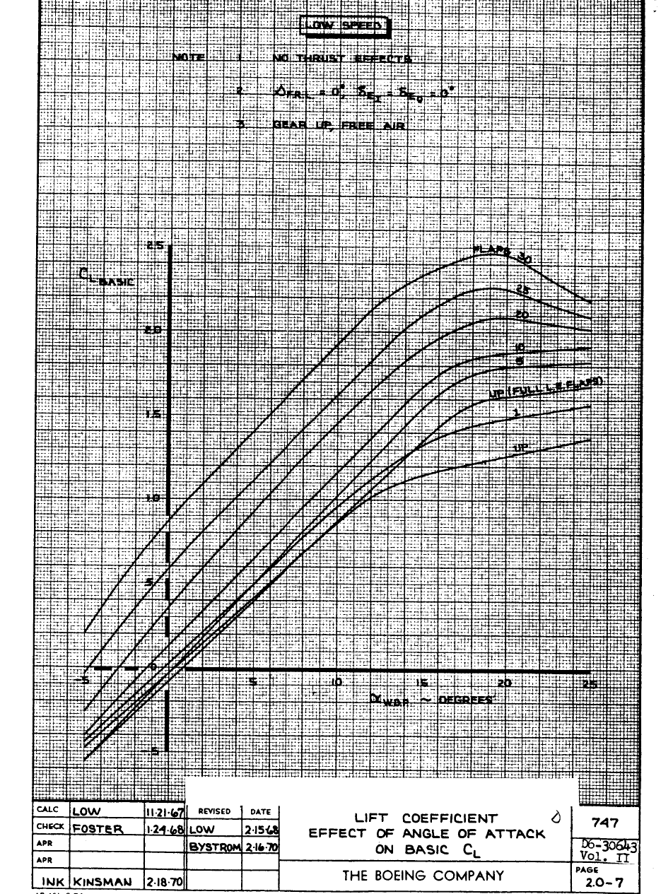
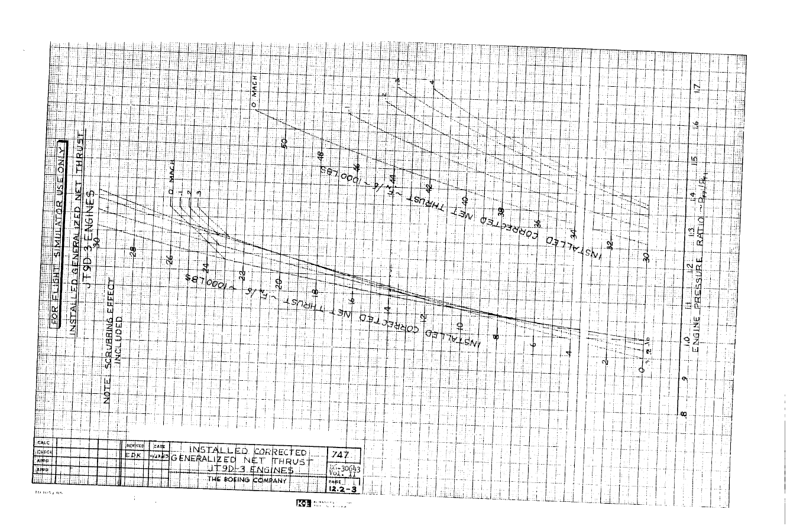
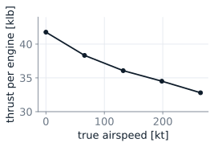

747 data: NASA CR-114494
NASA CR-114494 (1970), The Simulation of a Jumbo Jet Transport Aircraft, Vol. II:
Modeling Data: the data package Boeing gave NASA to build its 747 flight simulator, including the
FAA-approved flight manual. Free on NASA's technical reports server.
Lift

Boeing chart 2.0-7
↓ digitized

Drag

Boeing chart 3.0-5 (+ landing-gear drag, 3.0-15)
↓ digitized

Thrust (JT9D-3 engine)

Boeing chart 12.2-3, at the flight-manual takeoff setting
↓ digitized

Harrison & Seng · MATH 6006 · 11/25/26 update3